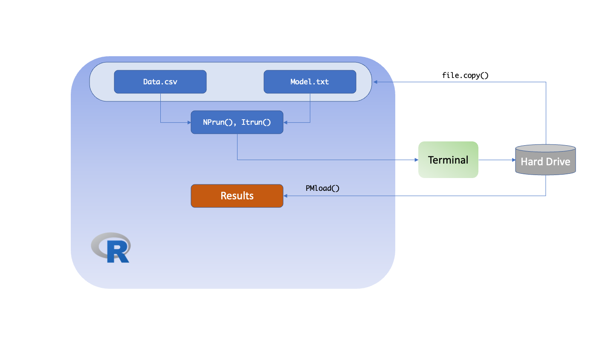

General Workflow
R6
The general Pmetrics workflow in R6 for IT2B and NPAG is shown in the following diagram.

The user creates the data and model objects at the top. These can
come from the hard drive or from within R (dashed arrows). The model
file is created in R using the PM_model$new() function and
the data file by PM_data$new(). When combined using
PM_fit$new() and the $run() function on the
resulting object, the analysis is executed. At the end of the run, the
hard drive will contain a new numerically named folder, e.g., 1, 2, 3,
…, that contains the files which can be loaded into R subsequently using
PM_load(x), replacing x with the folder
number. PM_load() is an alias for
PM_result$new() because it creates a new
PM_result() object which contains all the results of a run,
and has many assciated methods attached to it for plotting, simulating,
etc.
To change model parameters, the model object is updated via
PM_model$update(), PM_fit$new() is called and
then the run is executed with $run(). If continuing a
previous run that did not end, simply use the $run() and
specify the run number you wish to continue as the prior
argument to $run(). These scenarios are illustrated
below.
#Run 1 - ensure the data, model files are in the working directory
data1 <- PM_data$new("data.csv")
mod1 <- PM_model$new("model.txt")
fit1 <- PM_fit$new(data1, mod1)
fit1$run()
res1 <- PM_load(1) #PM_load is an alias for PM_result$new()
#Run 2 - update Ke range
mod2 <- mod1$clone #create an independent copy
mod2$update(list(pri = list(Ke = ab(0.5, 3))))
fit2 <- PM_fit$new(data1, mod2)
fit2$run()
#Run 3 - continue run 2
fit2$run(prior = 2)The great advantage of R6 over Legacy is that in R6, you no longer need to spend time copying files from prior run folders, modifying them, and ensuring that they are in the working directory. After the initial creation of the data and model objects, everything can be done in R from memory, although results are still saved to hard drive for later retrieval.
Legacy
The general Pmetrics workflow in Legacy for IT2B and NPAG is shown in the following diagram. The major differences compared to R6 are:
- Data and model The data is always a .csv file, and the model is always a text file which must be edited to make changes. Both must be copied from a prior folder to the current working directory for every run.
-
Run. Separate commands for NPAG and IT2B must be used,
i.e.
NPrun()andITrun(). -
Loading. Results are loaded with
PMload()notPM_load()because the former returns a collection of results all suffixed with the run number, e.g.op.1orfinal.1for run 1. This can lead to confusion if working on two projects at once, or uncertainty about what is actually loaded.

The user supplies the names of the data and model files as arguments
to the run functions. R is used to specify the working directory
containing these files. The analysis is executed in a terminal window by
calling NPrun(), ITrun() or
ERRrun() functions. The results can be loaded into R after
the run completes using PMload(). The analgous Legacy code
to the R6 code above is shown here.
#Run 1 - ensure the data, model files are in the working directory
NPrun("data.csv", "model.txt")
PMload(1)
#Run 2 - update Ke range - edit file outside R, copy to working directory
#use same data as for run 1
NPrun(data = 1, "model2.txt")
#Run 3 - continue run 2
NPrun(data = 1, model = 1, prior = 2)While there are fewer lines of R code than for R6, the edits made to create model2.txt are not recorded anywhere in R, and must be made outside R, with cumbersome file copying to ensure everything is in the working directory.